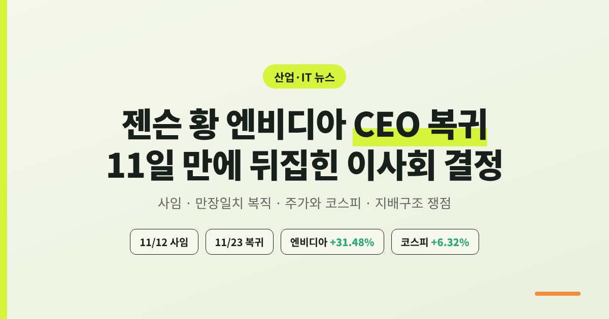
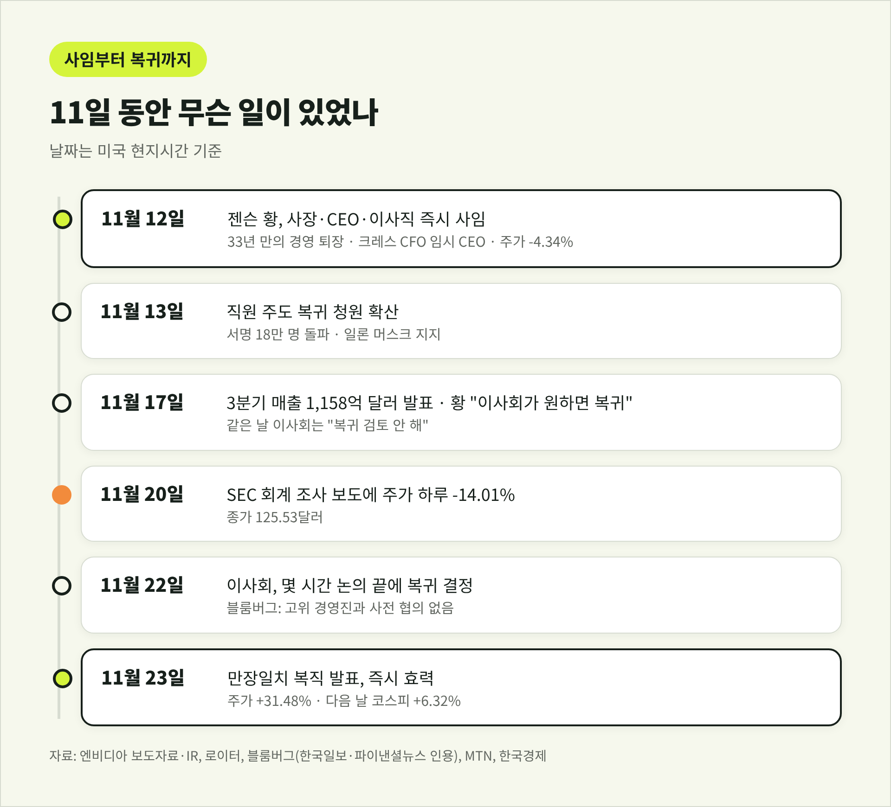
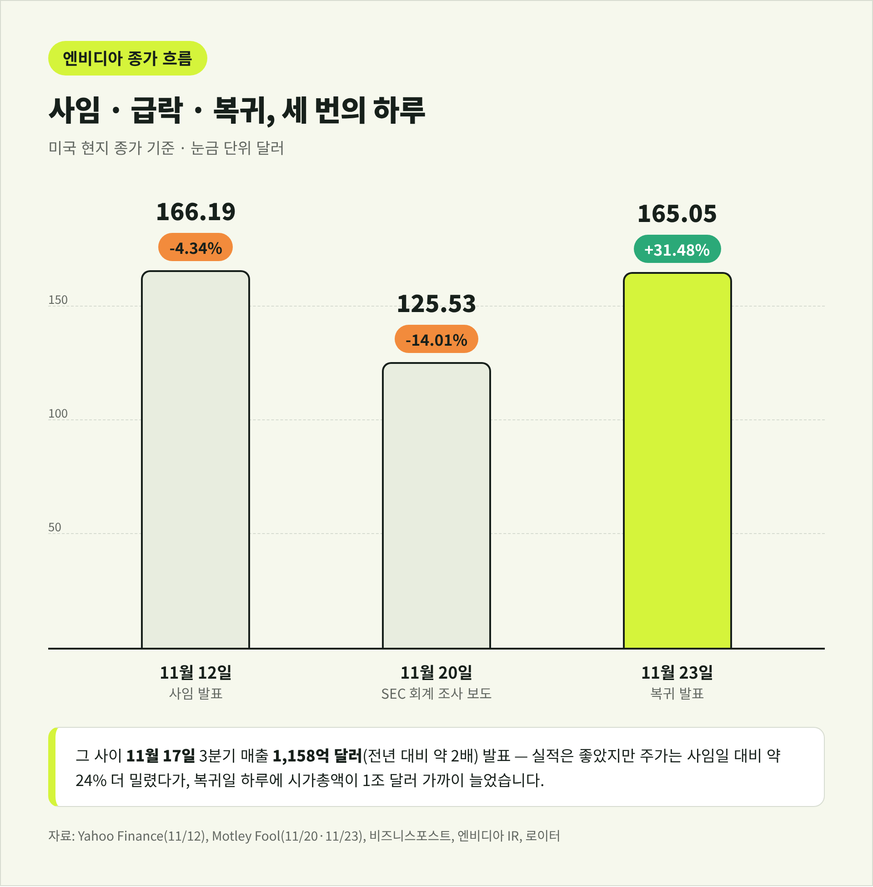
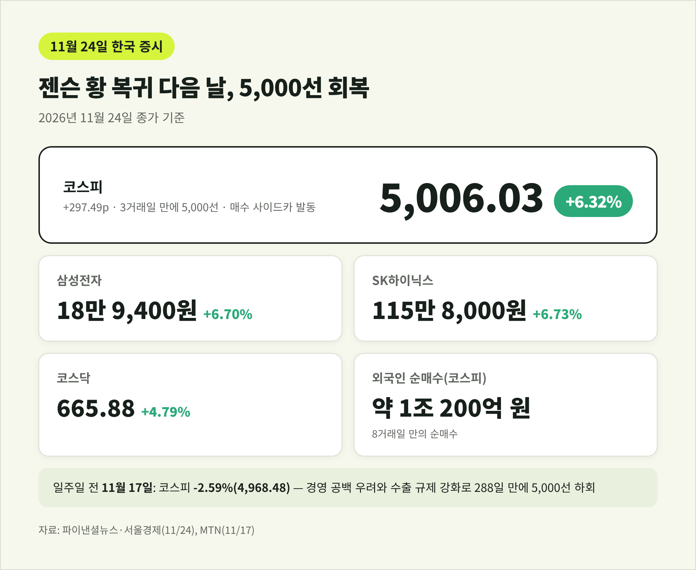
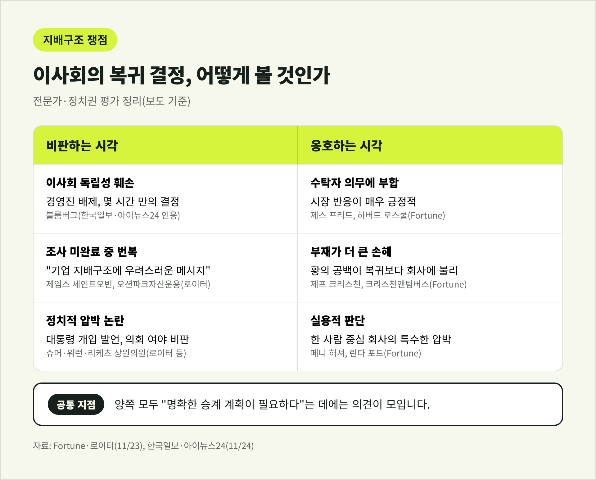
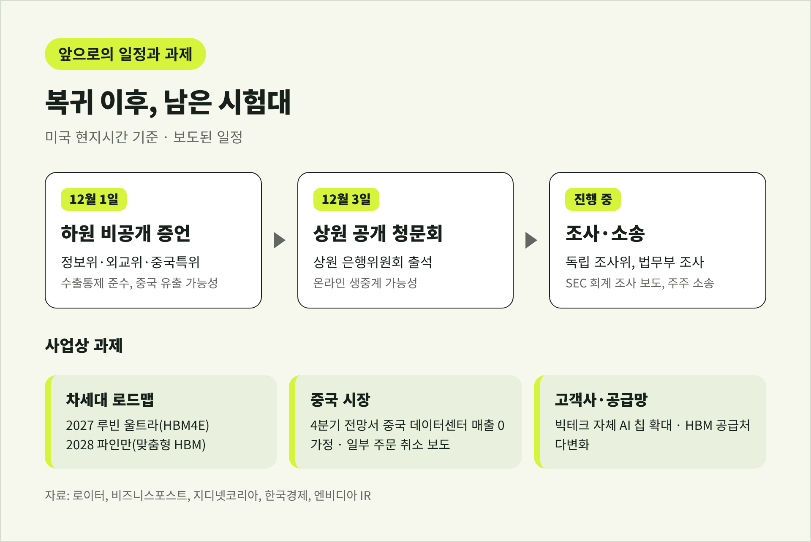

젠슨 황 엔비디아 복귀, 11일 만에 뒤집힌 이사회 결정과 남은 과제
이번 글에서는 젠슨 황의 엔비디아 CEO 복귀를 정리해 보겠습니다. 사임에서 복귀까지 11일 동안 무엇이 있었는지, 시장과 한국 반도체는 어떻게 반응했는지, 그리고 무엇이 아직 풀리지 않았는지를 차례로 짚습니다.
세 줄 요약
- 엔비디아 이사회가 11월 23일(현지) 젠슨 황을 CEO로 만장일치 복직시켰습니다. 사임 발표 11일 만입니다.
- 엔비디아 주가는 하루 31.48% 올랐고, 24일 코스피는 6.32% 뛰어 5,000선을 되찾았습니다.
- 다만 이사회가 경영진과 상의 없이 몇 시간 만에 결정했다는 보도, 의회 청문회와 각종 조사가 남아 있습니다.

■ 무슨 일이 있었나 — 만장일치 복직
엔비디아 이사회는 11월 23일(현지) 젠슨 황을 사장 겸 CEO, 이사로 다시 선임했습니다. 효력은 즉시 발생했습니다.
이사회는 황과 여러 차례 논의한 끝에 그의 솔직함과 경영 능력을 신뢰하게 됐다고 밝혔습니다. 미국 정부 고위 관계자들의 의견을 들었고, 복귀가 국가안보에 위험이 되지 않는다고 판단했다는 설명도 덧붙였습니다.
임시 CEO를 맡았던 콜레트 크레스는 최고재무책임자(CFO) 자리로 돌아갑니다. 하비 존스 이사회 의장은 "젠슨이 엔비디아를 이끌 적임자"라고 말했습니다. 황은 "겸손과 새로운 각오로 이 책임을 맡겠다"는 짧은 소감을 냈습니다(엔비디아 보도자료).
복귀와 함께 몇 가지 장치도 내놓았습니다.
- 외국 정보기관의 접근 의혹에 대한 독립 조사는 결론이 날 때까지 계속합니다.
- 독립이사로 구성된 '국가안보·수출통제위원회'를 새로 만듭니다.
- 최고준법책임자(CCO)를 따로 뽑습니다.
■ 사임에서 복귀까지, 11일의 경과
시작은 11월 12일(현지)이었습니다. 황은 이날 사장·CEO·이사직에서 즉시 물러났습니다. 33년간 이끌어 온 회사의 경영에서 손을 뗀 것입니다.
회사는 구체적인 사유를 밝히지 않았습니다. 보도된 범위에서 정리하면 이렇습니다. 혼외관계 의혹이 잇따라 제기됐고, 그중에는 미국 당국이 중국 정보기관과 연계됐다고 의심하는 인물과의 관계가 포함됐습니다(로이터, 한국경제). 중국은 스파이 의혹을 부인했고, 로이터도 이 의혹을 검증하지 못했다고 밝혔습니다.
이후 흐름은 빠르게 바뀌었습니다.
- 11월 13일: 엔비디아 직원이 시작한 복귀 청원이 퍼졌고, 서명은 18만 명을 넘었습니다. 일론 머스크도 지지를 표명했습니다.
- 11월 17일(현지): 황은 서면 성명에서 "개인적 삶에서 심각한 실수"를 인정했습니다. 그러면서 이사회가 회사와 주주에 이익이 된다고 판단하면 복귀하겠다고 밝혔습니다. 같은 날 이사회는 복귀를 검토하지 않는다고 선을 그었습니다(MTN).
- 11월 18일: 크레스 임시 CEO는 전사회의에서 기존 전략을 유지하겠다고 설명했습니다.
- 11월 22일(현지): 이사회가 몇 시간 논의 끝에 복귀를 결정했다고 블룸버그가 전했습니다.

예전 이사회의 말은 "복귀 계획 없음"이었습니다. 엿새 뒤의 결론은 "만장일치 복직"이었습니다.
■ 왜 중요한가 — 한 사람에게 매겨진 1조 달러
이번 일이 무거운 이유는 시장 반응에서 잘 드러납니다.
사임 당일인 12일, 엔비디아 주가는 장중 14% 안팎까지 밀렸다가 4.34% 내린 166.19달러에 마감했습니다. 같은 날 AMD와 브로드컴은 5%대 올랐습니다. 투자금이 경쟁사로 옮겨간 셈입니다.
그 사이 실적은 오히려 좋았습니다. 17일(현지, 한국시간 18일) 발표된 3분기 매출은 1,158억 달러로, 1년 전의 약 두 배였습니다. 데이터센터 매출만 1,076억 달러, 순이익은 653억 달러였습니다. 차세대 플랫폼 '베라 루빈'의 출하도 시작됐습니다(엔비디아 IR).
그런데도 주가는 버티지 못했습니다. 미국의 대중 AI 반도체 수출 규제 강화 소식이 겹쳤고, 20일에는 증권거래위원회(SEC)가 회계를 들여다본다는 보도에 하루 14.01% 떨어져 125.53달러가 됐습니다. 사임 당일 종가와 비교하면 약 24% 낮은 수준입니다.
복귀 발표가 나온 23일, 주가는 31.48% 올라 165.05달러에 마감했습니다. 하루 만에 시가총액이 1조 달러 가까이 늘었습니다(로이터, Fortune). 그래도 사임 이후의 손실을 모두 되찾지는 못했습니다.

좋은 실적보다 리더십의 공백이 더 크게 반영됐다는 뜻입니다. 엔비디아라는 회사가 여전히 창업자 한 사람에게 얼마나 기대고 있는지를 보여준 숫자이기도 합니다.
■ 한국 반도체와 코스피의 반응
여파는 하루 뒤 한국 증시로 건너왔습니다.
24일 코스피는 297.49포인트(6.32%) 오른 5,006.03에 마감했습니다. 3거래일 만에 5,000선을 되찾았고, 장 초반 매수 사이드카가 발동됐습니다. 외국인은 약 1조 200억 원을 순매수했습니다. 8거래일 만의 순매수입니다(파이낸셜뉴스, 서울경제).
삼성전자는 6.70% 오른 18만 9,400원, SK하이닉스는 6.73% 오른 115만 8,000원에 거래를 마쳤습니다. 일주일 전인 17일에는 반대였습니다. 이사회가 황의 복귀에 선을 긋는다는 소식과 미국의 수출 규제 강화가 겹치자 코스피는 2.59% 내려 288일 만에 5,000선 아래로 떨어졌습니다(MTN).

한국 기업이 민감하게 반응하는 이유는 고대역폭메모리(HBM)에 있습니다. HBM은 D램을 수직으로 쌓아 데이터 처리 속도를 끌어올린 메모리로, 엔비디아 AI 가속기의 성능을 좌우합니다. 두 회사는 베라 루빈에 HBM4를 공급하고 있습니다.
황이 물러난 뒤 시장은 2027년 '루빈 울트라' 일정이 밀리고 차세대 HBM 발주가 줄어들 가능성을 걱정했습니다. 복귀로 7세대 HBM(HBM4E)의 사양 조율과 물량 협상이 정상 궤도로 돌아갈 것이라는 전망이 나옵니다(한국경제).
정부도 움직였습니다. 사임 다음 날인 13일, 배경훈 부총리는 엔비디아와 현안 점검 회의를 열고 GPU 26만 장 공급 계획 등 기존 협력을 재확인했다고 밝혔습니다.
다만 안도만 할 일은 아닙니다. 대만 시장조사업체 트렌드포스는 엔비디아의 글로벌 HBM 수요 비중이 2026년 55%에서 2027년 42%로 낮아지고, 구글은 22%에서 31%로 오를 것으로 봤습니다(아주경제). 한 업계 관계자는 "엔비디아와의 동맹을 강화하는 동시에 특정 고객사 의존도를 낮추는 균형이 중요해졌다"고 말했습니다. 복귀가 곧바로 공급 물량이나 계약 조건의 변화를 뜻하지도 않습니다. 실제 물량은 성능과 인증, 수율이 정합니다.
■ 지배구조 쟁점 — 실용인가, 독립성의 후퇴인가
가장 논쟁적인 부분은 결정 방식입니다.
블룸버그에 따르면 이사회는 22일(일) 오후 몇 시간 만에 복귀안을 만들었습니다. 크레스 임시 CEO를 포함한 고위 경영진은 논의에서 빠졌고, 결정 뒤에야 통보를 받았습니다(한국일보, 아이뉴스24). 후임 후보 일부는 스스로 물러난 것으로 전해졌습니다.
트럼프 대통령의 역할도 쟁점입니다. 그는 CNBC 인터뷰에서 자신의 개입이 "매우 중요했다"고 말했습니다. 주가 하락이 결정에 영향을 줬느냐는 질문에는 "아마 그랬을 것"이라고 답했습니다. 한편 로이터는 트럼프가 엔비디아 주식을 1,100만~5,500만 달러어치 보유하고 있다고 전했고, 백악관은 제3자가 독립적으로 운용한다고 설명했습니다.
시각은 뚜렷하게 갈립니다.

비판하는 쪽은 이사회의 독립성을 묻습니다. 조사가 끝나지 않았는데 정치적 압박 속에서 엿새 만에 방침을 뒤집었다는 것입니다. 오션파크자산운용의 제임스 세인트오빈은 "미국 기업 지배구조의 현주소에 우려스러운 메시지"라고 평했습니다(로이터). 민주당의 척 슈머 상원 원내대표는 대통령이 국가안보보다 자신의 재정적 이익을 앞세웠다고 비판했습니다. 공화당의 피트 리케츠 상원의원도 복귀가 국가안보 우려에 대한 답변 의무를 없애 주지는 않는다고 말했습니다.
옹호하는 쪽은 결과를 봅니다. 하버드 로스쿨의 제스 프리드 교수는 이사회가 수탁자 의무에 맞게 행동했고 시장 반응도 매우 긍정적이었다고 했습니다. 헤드헌팅 업체 크리스천앤팀버스의 제프 크리스천 CEO는 황의 부재가 복귀보다 회사에 더 큰 손해였다고 봤습니다(Fortune).
양쪽이 동의하는 지점도 있습니다. 명확한 승계 계획이 필요하다는 것입니다.
조직 내부의 과제도 남았습니다. 사임 국면에서 한 엔비디아 디렉터는 내부 서한으로 "대체 불가능한 인재들이 이탈을 고민 중"이라고 경고했습니다(Tom's Hardware, WSJ 인용). 반대로 20일에는 황이 수년간 직원들을 모욕하고 질책했다는 뉴욕타임스 보도도 나왔습니다(한국경제). 복귀로 인재 이탈 우려는 일단 누그러졌지만, 실제 이탈 사례는 확인되지 않았습니다. 조직의 신뢰를 다시 세우는 일은 이제부터입니다.
■ 앞으로의 과제와 일정
복귀가 끝이 아니라는 점은 일정표가 말해 줍니다.

첫째는 의회입니다. 12월 1일(현지) 하원 정보위·외교위·중국특위의 비공개 증언이, 3일에는 상원 은행위원회 공개 청문회가 예정돼 있습니다. 쟁점은 수출통제 준수 여부와 중국으로의 반도체 유출 가능성입니다(비즈니스포스트, 로이터). 법무부 조사, SEC 회계 조사 보도, 관계 은폐로 주주를 기만했다는 주주 소송도 이어지고 있습니다.
둘째는 중국 시장입니다. 로이터에 따르면 중국·홍콩 본사 고객 매출은 1년 새 29억 7,000만 달러에서 110억 5,000만 달러로 늘었습니다. 그러나 엔비디아는 4분기 전망에서 중국 데이터센터 매출을 0으로 가정했습니다. 황이 물러난 뒤 일부 중국 고객이 주문을 취소했다는 보도도 있었습니다. 다만 그 규모는 확인되지 않았습니다. 11월 3일 중간선거로 민주당이 상·하원을 장악하면서 의회의 반도체 감시는 더 강해질 전망입니다.
셋째는 로드맵과 고객사입니다. 엔비디아는 2027년 루빈 울트라, 2028년 맞춤형 HBM과 3D 적층을 결합한 '파인만'을 예고했습니다. 구글·마이크로소프트 같은 빅테크가 자체 AI 칩과 공급망 다변화를 서두르는 가운데, 일정을 지키는 것이 신뢰 회복의 첫 시험대가 될 것입니다.
정리하면 이렇습니다.
엔비디아는 위기의 한가운데서 가장 익숙한 답을 골랐습니다. 시장은 환호했고, 한국 반도체도 한숨을 돌렸습니다. 그러나 의혹에 대한 조사는 끝나지 않았고, 결정 과정에 대한 물음표도 그대로입니다.
이번 복귀는 해결이 아니라 유예에 가깝습니다 — 진짜 시험은 12월 청문회와 조사 결과에서 시작됩니다.
황의 리더십이 다시 한번 입증될 수 있느냐고 묻는다면, 그 답은 주가보다 앞으로 몇 달의 투명성이 들려줄 것이라고 생각합니다.
이 글은 공개 보도를 정리한 해설이며, 특정 종목에 대한 투자 권유가 아닙니다.
참고자료
- 엔비디아 뉴스룸, "NVIDIA Board Reinstates Jensen Huang as President, CEO and Board Director" (2026-11-23) — https://nvidianews.nvidia.com/news/nvidia-board-reinstates-jensen-huang-as-president-ceo-and-board-director
- 엔비디아 IR, "NVIDIA Announces Financial Results for Third Quarter Fiscal 2027" (2026-11-17) — https://investor.nvidia.com/news/press-release-details/2026/NVIDIA-Announces-Financial-Results-for-Third-Quarter-Fiscal-2027/
- Reuters(Yahoo Finance UK), "Huang returns as Nvidia CEO after Trump intervention in abrupt board reversal" (2026-11-23) — https://uk.finance.yahoo.com/news/nvidia-reinstates-jensen-huang-ceo-135916841.html
- Reuters(BNN Bloomberg), "How Nvidia's billion-dollar turnaround in China is threatened by Huang's exit" (2026-11-23) — https://www.bnnbloomberg.ca/business/artificial-intelligence/2026/11/23/how-nvidias-billion-dollar-turnaround-in-china-is-threatened-by-huangs-exit/
- Fortune, "Incompetent or pragmatic? Nvidia board's rehiring of Jensen Huang splits corporate governance experts" (2026-11-23) — https://fortune.com/2026/11/23/corporate-governance-experts-divided-nvidia-decision-rehire-jensen-huang/
- Fortune, "Wall Street just put a $1 trillion price on Jensen Huang" (2026-11-23) — https://fortune.com/2026/11/23/wall-street-1-trillion-jensen-huang-nvidia-stock-market-cap/
- Al Jazeera, "Nvidia board reinstates Jensen Huang as CEO" (2026-11-23) — https://www.aljazeera.com/economy/2026/11/23/nvidia-board-reinstates-jensen-huang-as-ceo
- Forbes, "Nvidia Shares Sink As Rival Chipmakers Rise After Jensen Huang Resigns" (2026-11-12) — https://www.forbes.com/sites/fionariley/2026/11/12/nvidia-sinks-11-at-open-after-jensen-huang-resigns-pushing-market-cap-below-microsoft/
- Motley Fool, "Stock Market Today, Nov. 20" (2026-11-20) — https://www.fool.com/coverage/stock-market-today/2026/11/20/stock-market-today-nov-20-nvidia-s-usd2-5-trillion-rout-deepens-as-sec-accounting-probe-adds-to-wall-street-s-ai-sell-off/
- Motley Fool, "Stock Market Today, Nov. 23" (2026-11-23) — https://www.fool.com/coverage/stock-market-today/2026/11/23/stock-market-today-nov-23-nvidia-surges-31-adding-nearly-usd1-trillion-in-market-value-as-jensen-huang-reclaims-ceo-role/
- Tom's Hardware, "Nvidia employee warns of 'irreplaceable' talent exodus..." (2026-11-17) — https://www.tomshardware.com/tech-industry/big-tech/nvidia-employee-warns-of-irreplaceable-talent-exodus-if-jensen-huang-not-reinstated-cautions-board-and-top-brass-that-talent-at-nvidia-is-now-contemplating-departing
- 이투데이, "젠슨 황, 엔비디아 CEO 전격 복귀 [종합]" (2026-11-23) — https://www.etoday.co.kr/news/view/2651908
- 한국경제, "젠슨 황, 엔비디아 CEO 전격 복귀…이사회 만장일치 결정" (2026-11-24) — https://www.hankyung.com/article/2026112454041
- 한국경제, "한숨 돌린 K반도체…HBM 공급처 다변화할 듯" (2026-11-24) — https://www.hankyung.com/article/2026112476951
- 한국일보, 엔비디아 이사회 복귀 결정 경위(블룸버그 인용) (2026-11-24) — https://www.hankookilbo.com/News/Read/A2026112408140001578
- 파이낸셜뉴스, "코스피, 젠슨 황 복귀에 6.32% 급등…5000선 회복" (2026-11-24) — https://www.fnnews.com/news/202611241604048501
- 파이낸셜뉴스, 블룸버그 "엔비디아 이사회, 경영진 모르게 젠슨 황 복귀 결정" (2026-11-24) — https://www.fnnews.com/news/202611240402199494
- 서울경제, "젠슨 황 컴백에 삼전닉스 웃었다…코스피 '5000피' 탈환" (2026-11-24) — https://m.sedaily.com/article/20118341
- 아이뉴스24, "경영진엔 사후 통보…엔비디아 이사회, 젠슨황 복귀 다급하게 결정" (2026-11-24) — https://m.inews24.com/v/2029556
- 비즈니스포스트, "젠슨 황 복귀에 삼성전자·SK하이닉스 '한숨 돌려'" (2026-11-24) — https://www.businesspost.co.kr/BP?command=article_view&num=452780
- 아주경제, "11일 만에 돌아온 AI 황제…삼성·하이닉스 HBM 동맹 다시 탄력" (2026-11-24) — https://www.ajunews.com/view/20261124092715123
- MTN, "젠슨 황, 사임 후 첫 입장…이사회 원하면 CEO 복귀" (2026-11-18) — https://news.mtn.co.kr/article/2026111801475542535
- MTN, "젠슨황 여파에 코스피 2.6%↓…5000선 내줘" (2026-11-17) — https://news.mtn.co.kr/article/2026111716073431251
- 코리안센터, 배경훈 "엔비디아 측과 기존 협력 계획 재확인" (2026-11-13) — https://www.koreancenter.or.kr/news/articleView.html?idxno=1439207